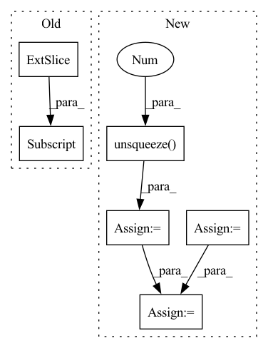

Pattern ID :6568

Before Change
beta_t = self.config.beta_min + t * (self.config.beta_max - self.config.beta_min)
drift = -0.5 * beta_t[:, None, None, None] * x
diffusion = torch.sqrt(beta_t)
drift = drift - diffusion[:, None, None, None] ** 2 * score
x_mean = x + drift * dt
// add noise
After Change
-0.25 * t**2 * (self.config.beta_max - self.config.beta_min) - 0.5 * t * self.config.beta_min
)
std = torch.sqrt(1.0 - torch.exp(2.0 * log_mean_coeff))
std = std.flatten()
while len(std.shape) < len(score.shape):
std = std.unsqueeze(-1)
score = -score / std
// compute
dt = -1.0 / len(self.timesteps)
beta_t = self.config.beta_min + t * (self.config.beta_max - self.config.beta_min)
beta_t = beta_t.flatten()
while len(beta_t.shape) < len(x.shape):
beta_t = beta_t.unsqueeze(-1)
drift = -0.5 * beta_t * x
diffusion = torch.sqrt(beta_t)
drift = drift - diffusion**2 * score
x_mean = x + drift * dt
// add noise
In pattern: SUPERPATTERN
Frequency: 3
Non-data size: 6
Instances
Fragment ID: 22866396
Project Name: huggingface/diffusers
Commit Name: bd8df2da89d99f630e5aa2ddb8f8cb45456561f1
Time: 2022-09-27
Author: kashif.rasul@gmail.com
File Name: src/diffusers/schedulers/scheduling_sde_vp.py
M Class Name: ScoreSdeVpScheduler
N Class Name: ScoreSdeVpScheduler
M Method Name: step_pred(5)
N Method Name: step_pred(4)
M Parent Class: SchedulerMixin,ConfigMixin
N Parent Class: SchedulerMixin,ConfigMixin
M File Name: src/diffusers/schedulers/scheduling_sde_vp.py
N File Name: src/diffusers/schedulers/scheduling_sde_vp.py
M Start Line: 61
M End Line: 75
N Start Line: 51
N End Line: 83
'>
Before Change
interest_vectors = self.interest_extractor(history, lengths) // bsz, K, emb
i_vectors = self.interest_extractor.i_embeddings(i_ids)
target_vector = i_vectors[:, 0] // bsz, emb
target_intent = (interest_vectors * target_vector[:, None, :]).sum(-1) // bsz, K
his_vector = self.intent_predictor(history, lengths) // bsz, K
pred_intent = self.proj(his_vector) // bsz, K
user_vector = (interest_vectors * pred_intent.softmax(-1)[:, :, None]).sum(-2) // bsz, emb
After Change
// For JS divergence analysis
if self.stage != 2 and feed_dict["phase"] == "test":
target_vector = i_vectors[:, 0] // bsz, emb
target_intent = self.similarity(interest_vectors, target_vector.unsqueeze(1)) // bsz, K
idx = torch.from_numpy(np.arange(batch_size)).to(self.device)
rec_vector = i_vectors[idx, prediction.max(-1)[1]]
rec_intent = self.similarity(interest_vectors, rec_vector.unsqueeze(1)) // bsz, K
out_dict["js"] = self.js_div(target_intent, rec_intent).sum(-1)
return out_dict
'>
Fragment ID: 22866398
Project Name: thuwangcy/rechorus
Commit Name: 65a5eeb4ab208d93c3b4817469809eb715f1b374
Time: 2021-12-07
Author: THUwangcy@gmail.com
File Name: src/models/developing/TiMiRecLight.py
M Class Name: TiMiRecLight
N Class Name: TiMiRecLight
M Method Name: forward(2)
N Method Name: forward(2)
M Parent Class: SequentialModel
N Parent Class: SequentialModel
M File Name: src/models/developing/TiMiRecLight.py
N File Name: src/models/developing/TiMiRecLight.py
M Start Line: 113
M End Line: 122
N Start Line: 128
N End Line: 155
'>
Before Change
tgt_in = torch.zeros(btz,1, dtype=torch.long).fill_(self.sos_id).to(device)
for step in range(self.max_len):
pred = self.decoder(tgt_in, enc_out, enc_mask)
preds[:,step,:] = pred.squeeze(-2)
y_hat = pred.max(-1)[1]
tgt_in = y_hat
y_hats[:,step] = y_hat.squeeze(dim=-1)
After Change
if self.feat_extractor == "vgg" or self.feat_extractor == "w2v":
inputs,input_length = self.conv(inputs), input_length>>2
enc_mask = get_attn_pad_mask(input_length).to(inputs.device)
enc_out, enc_mask = self.encoder(inputs, enc_mask)
preds = torch.zeros(btz, self.max_len, self.out_dim, dtype=torch.float32).to(device)
y_hats = torch.zeros(btz, self.max_len, dtype=torch.long).fill_(self.sos_id).to(device)
tgt_in = torch.zeros(btz,1, dtype=torch.long).fill_(self.sos_id).to(device)
for step in range(self.max_len):
//tgt_mask = target_mask(tgt_in, ignore_id=self.pad_id).to(tgt.device).unsqueeze(-3)
tgt_mask = subsequent_mask(step+1).to(tgt.device).unsqueeze(0)
preds = self.decoder(tgt_in, tgt_mask, enc_out, enc_mask)
//preds[:,step,:] = pred.squeeze(-2)
y_hat = preds.max(-1)[1]
//print(y_hat)
//print(y_hat)
tgt_in = torch.cat((tgt_in,y_hat[:,step].unsqueeze(1)), dim=1)
//y_hats[:,step] = y_hat.squeeze(dim=-1)
//y_hats[:,step] = y_hat[:,step]
y_hats = tgt_in[:,1:]
if tgt is None:
for testing
golds = None
'>
Fragment ID: 22866386
Project Name: qute012/kosr
Commit Name: bf3ec27288e38044b86f90a61978e360690072f5
Time: 2021-02-03
Author: ejrwls012@gmail.com
File Name: kosr/model/transformer/model.py
M Class Name: Transformer
N Class Name: Transformer
M Method Name: greedy_search(4)
N Method Name: greedy_search(4)
M Parent Class: nn.Module
N Parent Class: nn.Module
M File Name: kosr/model/transformer/model.py
N File Name: kosr/model/transformer/model.py
M Start Line: 77
M End Line: 88
N Start Line: 80
N End Line: 98